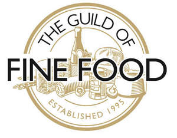
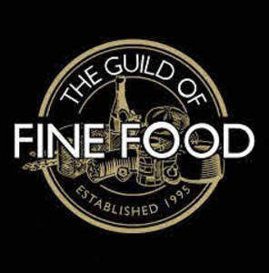

Trade Mark Journal No.2025/026 27 June 2025
UK00004189656 15 April 2025 (16,29,30,32,33,35,41,42)
Mark 1

Mark 2

- Class 16
- Printed publications; books; publicity texts, journals, magazines, news sheets and newspapers, manuals, catalogues, brochures, guides; instructional and teaching materials; text books; reference materials; leaflets; printed matter; advertising material; pictures and posters; prints; photographs; calendars; diaries; wall charts; bottle envelopes of cardboard; bottle wrappers of cardboard; boxes of cardboard; coasters of cardboard; placards of cardboard; place mats of cardboard; bottle envelopes of paper; bottle wrappers of paper; boxes of paper; coasters of paper; placards of paper; place mats of paper; table linen of paper; table mats; paper napkins; coasters; packaging materials.
- Class 29
- Meat, fish, poultry and game; meat extracts; preserved, frozen, dried and cooked fruits and vegetables; jellies, jams, compotes; eggs; milk and milk products; cheese; cheese products; butter; yogurt; dairy products; cream [dairy products]; edible oils and fats; olive oil for food; meat preserves; food products made from meat; black pudding; seafood preserves; fish preserves; food products made from fish; seafood products; processed fish spawn; processed seeds; seaweed extracts for food; processed legumes; food products made from beans or pulses; dried or canned pulses; food products made from nuts or seeds; ground nuts; beans; fruit-based snack food; pickles; preserved garlic; suet for food; tofu; egg substitutes; poultry substitutes; meat substitutes; milk substitutes; cheese substitutes; vegetable juices for cooking; vegetable soup preparations; preparations for making bouillon; preparations for making soup; broth; broth concentrates; soups; prepared meals consisting principally of meat and/or poultry; prepared meals consisting principally of meat and/or poultry substitutes; prepared meals consisting principally of seafood; prepared meals consisting principally of seafood substitutes; prepared meals consisting principally of fruit and/or vegetables; prepared meals consisting principally of eggs; prepared meals consisting principally of egg substitutes; prepared meals consisting principally of dairy products; prepared meals consisting principally of dairy substitute products; potato-based snacks; potato chips; potato flakes; milk-based snacks; cheese-based snacks; chilled dairy desserts; fruit desserts.
- Class 30
- Flour, cereals, cereal products and preparations made from cereals; pasta; spaghetti; noodles; snack products, namely muesli based snacks, multi-grain based snacks, corn based snacks, maize based snacks, snack foods prepared from potato flour, snack foods consisting principally of pasta, snack foods consisting principally of bread, snack foods consisting principally of confectionery, snack bars containing a mixture of grain, nuts and dried fruit [confectionery], cereal bars; food package combinations consisting primarily of cereal products; baking products, namely, baking powder, baking soda, flour for baking, prepared baking mixes; baking powder, baking soda, cake flavourings, cake decorations, cake frosting; crackers; yeast; rice cakes; crisp breads; popcorn; cereal based snack food; cheese flavoured puffed corn snacks; cheese flavoured snacks, cheese balls; cheese flavoured snacks; cheese curls; extruded corn snacks; extruded wheat snacks; snack bars; puffed corn snacks; rice-based snack foods; snack mix consisting primarily of crackers, pretzels, and/or popped popcorn; wheat-based snack foods; bread and bread products; sandwiches; food package combinations consisting primarily of bread and/or crackers; biscuits for cheese; pizzas; quiches; condiments; sauces; salad dressings; vinegar; chutneys; relish; ketchup; confectionery, sugar confectionery, sweets; marzipan; pastries; biscuits, rusks, cakes, cookies, pancakes and pastries, tarts, wafers, toffees; puddings; chocolate desserts; custards [baked desserts]; honey; treacle; golden syrup; jelly; chocolate, chocolate products, chocolate confectionery, chocolate spreads, spreads made from chocolate and nuts; beverages with a chocolate, cocoa or coffee base and containing milk; coffee, coffee extracts, coffee-based preparations and beverages; iced coffee; artificial coffee, artificial coffee extracts, preparations and beverages made with artificial coffee; chicory; tea, tea extracts, preparations and beverages made with tea; iced tea; malt-based preparations for human consumption; cocoa, powdered preparations containing cocoa for use in making beverages; cocoa-based preparations and beverages; cocoa based beverages with milk; cocoa powder; chocolate-based preparations and beverages; drinking chocolate; edible ices, water ices, ice confectioneries, ice creams, ice desserts, ice cream desserts, frozen yogurts.
- Class 32
- Beers; mineral and aerated waters and other non-alcoholic drinks; fruit drinks and fruit juices syrups and other preparations for making beverages.
- Class 33
- Alcoholic beverages; wines, liqueurs and spirits; brandy, cider, cocktails, gin, kirsch, rum, sake, vodka, whisky.
- Class 35
- Advertising services; provision of advertising space; provision of space in publications and on web sites for advertising goods and services; provision of advertising for others; dissemination of advertising for others; advertising the goods and services of other vendors, enabling customers to conveniently view and compare the goods and services of those vendors via printed publications, a web site or by other electronic media; marketing services; promotional services; promoting the goods and services of others by arranging for sponsors to affiliate their goods and services with award programs; organisation of events and exhibitions for commercial and advertising purposes; organisation of events and exhibitions for the purpose of advertising food and drink; retail services connected with the sale of food and drink; information and advisory services relating to all the aforesaid services.
- Class 41
- Organisation of competitions and awards; organisation of competitions and awards relating to food and drink; hosting of awards and award ceremonies; hosting of awards and award ceremonies relating to food and drink; arranging and conducting events, conferences, conventions, symposia and exhibitions; arranging and conducting of events, conferences, conventions, symposia and exhibitions relating to food and drink; arranging and providing food and drink tasting events; education and training services; education and training services relating to food, cookery and taste; conducting classes, seminars and courses of instruction; conducting classes, seminars and courses of instruction relating to food and drink; providing training for cooks, chefs and sommeliers; publishing services; electronic publishing services; provision of information by electronic means, including via the Internet; provision of interactive information; information and advisory services relating to all the aforesaid services.
- Class 42
- Testing, authentication and quality control services; testing, authentication and quality control services relating to food and drink; product quality control testing; quality control testing relating to food and drink; consultancy relating to testing, authentication and quality control; consultancy relating to the testing, authentication and quality control of food and drink products; quality control services relating to the hygiene of food and drink products; accreditation services; accreditation services relating to food and drink; developing and administering standards for food and drink products; product certification services; food and drink product certification services; information and advisory services relating to all the aforesaid services.
The Guild of Fine Food Limited
Representative: Cleveland Scott York